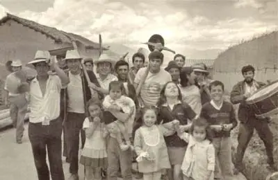
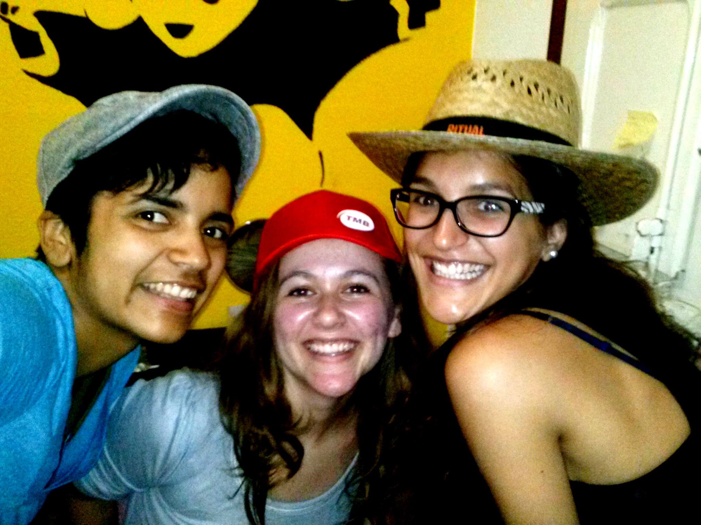
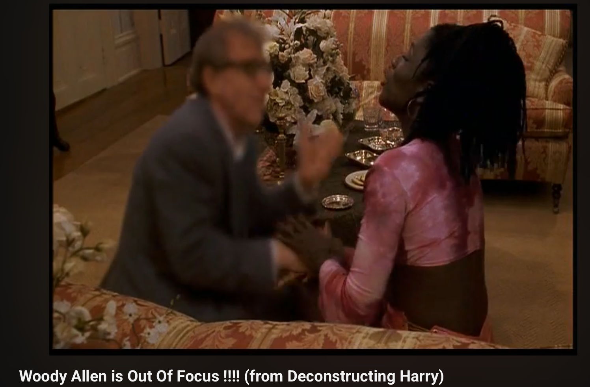

In this reading there are many examples of ways that we as creatives can challenge The New Jim Code of the technological era. The New Jim Code is an analysis of how tech is reinforcing or creating new racial and social inequities. The idea of Design Justice posed by author Sasha Constanza-Chock, a professor at MIT, is focused on procedural and distributive justice. An area that she is concerned with is the design of learning environments, especially “radical ideas for reinventing college.” Paulo Freire’s Pedagogy of the Oppressed is at the center of these ideas where he writes “if the structure does not permit dialogue, the structure must be changed.”

Freirien ways of thinking of space center the learner. I also believe indigenous knowledgeways center the learner with non-hierarchical design. Ultimately creating a human centered design. Mingas are one form of indigenous thinking that comes from the Kichwa lineage of the Andes of Ecuador. Mingas is a term used to describe a group of people coming together to do a job for greater good. One way I have seen this happen in New York is in urban farms. In this way the garden beds are the classroom. Around the garden beds are places to sit and commune under a canopy. This allows there to be a central gathering space and to rest out of the sun. Part of the design of community gardens and urban farms is focused on smaller group projects that benefit the greater good. It takes into consideration the capacity each individual can contribute and is adaptable to change throughout the seasons. Could it be possible that looking at indigenous communities knowledge ways that it may be a source for design justice in the classroom?
"People in a minga at New Roots Farm in The Bronx, 2019"
As of now, I know that there are Forest Schools in NYC. At forest schools children learn outdoors, learning about nature through touch and play. This is taking a similar approach of learning from native and indigenous communities across the Americas. However, I am curious if there is design justice in the creation of the forest schools. Are they for everyone? Who gets to go to forest school? Are the demographics reflective of native people who this idea was borrowed from?
Overall, I enjoyed this documentary about the internet by Werner Herzog. From the foreshadowing of a Christopher Columbus analogy for the first communication of the internet to the banjo playing around a fire. As an observer the chapters that we are taken through reveals the absurdity of the internet and the dissonance between those who live present here on earth and those vibrating in the lower frequencies of colonizing mars, like Elon Musk. At the center of the story lives Mitnick AKA Eric Weiss. To me he is the heart of this story amongst internet pioneers.
Someone identifies the two types of internet identifying systems there are. 1 - underlay identifiable, tracking every single piece of identity of a person and 2 - unidentifiable, cryptic and untraceable under layers of code. He says we have to decipher which one we want to use and when. There is power in both. It the wrong hands this could lead to harm. Mitnick, living as a fugitive of the state, used his power to defend himself. He was so young and ahead of the FBI on how he could outmaneuver them as they were tracking him down. He was able to track them back. Leaving a donut box in his fridge labeled FBI was *Chefs Kiss*.
As civilians I think it's important to know the ends of which the internet can be used for protection. Protecting our privacy with browsers like Duck duck go or preventing identity theft online. It can also be used in a way to interrupt power structures designed to continue colonial models such as trafficking. As the last speaker said, i t will still be up to us as humans to decide how we want to use it.
When I was little my dad told me always to say "good morning" to anyone I saw on the street, especially anyone I sensed a bad vibe from. He said "greeting someone is the best way to disarm them." In chapter two of The Electronic Disturbance the example of being nomadic is given as a means for continued autonomy, referring to nomadic groups of people who weren't colonized during the Persian wars. By moving around, not having a central form of government allows them to evade western colonialism. To me, the movement is a way to disarm in a way without engaging in war.
Disarming power structures in a digital space benefits from mass movement. "Treading water in the pool of liquid power need not be an image of acquiescence and complicity. In spite of their awkward situation, the political activist and the cultural activist (anachronistically known as the artist) can still produce disturbances."
In Grayson Earle's work he identifies ways that technology can be used as a device to interrupt oppressive structures with people power. He also identifies a lineage of this work in his article Digital Disruptors. One in particular that I find powerful is Bail Bloc. This software uses cryptocurrency accumulated from multiple users unused computer power. The crypto currency is deposited towards someones bail. In this example there is no central form of governing of users. Multiple people can participate in interrupting one part of discriminatory practices of bail setting in the prison industrial complex. I'm fascinated by this use and want to understand how else coding and the internet is used to interrupt exploitative institutions.
My first internship during high school was at El Tecolote Bilingual Newspaper in the Mission District of San Francisco. I was introduced to the inverted style of writing an article. Catch the reader with the details uptop, the meat of the story in the middle, close with a summary. This style to me meant I was being subjective. When I returned to the newspaper five years later the new editor in chief told me "all media is manipulative, it's up to you to decide how you manipulate it." That stuck with me and when I read this in Enzensbergers article it helped me make sense of it.
With access to the equipment and means of production, mass consumers (like myself) have been able to create media to be consumed to reach a mass audience using platforms like Instagram and TikTok. The consumers are now also becoming professionals as the gap between consumer and prograde equipment is deminishing. "almost everyone speaks better than he writes." (p. 32) By having various means of expressions it allows for popular voices to be heard and influence political decissions. Both on the right wing and on the more radical side. I believe this type of coverege is what has spurred a great support for Palestine against the Israeli occupation since October 7th, 2023. This feels to be evident with the great promotion of the documentary film October 8th, starring actress Debra Messing and other pro zionist hollywood artist.
A film like "The Encampments" was created using consumer media from iphones, cam corders and pro-graded equipment. There was a deep need for this kind manipulation of media being produced about Palestine because of the enmeshment the U.S. government has with Israel. Through social media I was able to bare witness to the genocide first hand from Palestinian's going live or publishing their stories on their personal platforms. These "amature" recordings were viewed as valuable, necessary and the truth by many viewers across the globe. There was print media like The New York Times that were inaccurately reporting the numbers of murders and the actual impact of Israeli strike force. In 2024 I witnessed my generation and my mothers generation turn to social media for their factual news.
Everywhere there is oppression there are eyes as witnesses. To be able to speak and record what we see as truth is power and one of the ways we can create change. As Ben Parker said "With great power, comes great responsability."
Science fiction, I believe, is a way to take from the past to project a profit for the future. In Donna Haraway’s manifesto I could imagine some of my favorite writers making a movie based on the cyborg or a chimera feeding on socialist feminism to eat the oppressive systems in place. As I read, three cyborg theorist came to mind: authors Octavia Butler and Rebecca Roanhorse and filmmaker Alex River. Each one has created work that I see stemming in anti-colonial practice and challenging the western expansion through historical fiction.
In Octavia Butlers Dawn the characters are living in a post apocalyptic world and the most precious characters are genderless. There is a curiosity about their sex and biological make up from the main character who woke up in this world unknown to them. This post gender world resembles, to me, the essence of indigenous knowledge of two spirit people. When the wisdom keepers are unattached to gender there is an abundance of possibility in these characters. Butler is pulling in pre-colonial understanding in her fictionalized world which offers another way to see ourselves in society.
Rebecca Roanhorse’s book Black Sun takes place in a pre-colonial mesoamerican area that resembles the south west. In this book one of the main characters, Xiala, is Teek. A human who can also transform into a fishlike creature. Not only a merperson but also a fish, an octopus, a crackin! It’s amazing. And Xiala is described as femme presenting and a total bad ass pirate sea captain who understands how to navigate the stars. Here, the technology of cosmology and marine biology is noted as pre-colonial and something that is inherently known. Passed on through oral history. These practices are indigenous across non-settler cultures and the idea of humans having animalistic powers like the chimera are old school.
Lastly, the idea of organic of domination of labour transferring to informatics of domination of robotics is visible in the film Sleep Dealer by Alex Rivera. In the film the main plot of the film revolves around a factory in Tijuana, Mexico. A borderland. In this factory laourers plug their bodies in to robotics that control machines in Downtown Los Angeles, CA building a skyscraper. Migrant labour minus the migration to the United States. By remoting in to work the company that monopolises on what otherwise be considered “Homework Economy” by Richard Gordon (Haraway, p. 11).
These artist are using the cyborg theory to reflect back to the audience a world that can exist with out U.S. Imperialism or as a warning about the advancement of it.
The spectacle described in The Society of the Spectacle by Guy Debord is clear in the class divide of the haves and have nots. What interests me in this divide is the symbols of achieving “having” and who controls that market. There are two folds of this market that came to mind: 1. The commodification of a spectacle and 2. the spectacle that holds a stake in their commodification.
The x-mas list, I believe, is an abstract of the modern speculative commodity. On this list you can find a chronology of the most desirable commodities that captivate the general audience in the United States as value use. This list of desires is aimed at the most capitalist of all the capitalist: children. Children writing to Santa Claus, a spectacle that represents the saint of capitalism, hyperfocus on the most valuable commodity of their time. “The consciousness of desire and the desire for consciousness are identically the project which, in its negative form, seeks the abolition of classes, that is, the direct possession by the workers over all the moments of their activity.”(p. 29)
This desire then creates cultural capital which reinforces class status stratification. Cultural capital is everything to a kid, especially if the kid's family is struggling to make ends meet. Brands in the 90's were the epitome of the spectacle commodity. Growing up, Nike Air Jordans were on most of my friends' x-mas list. The story of the Jumpman logo as a legacy is one where the spectacle becomes the stakeholder in the commodity and all the kids knew it.
Michael Jordan and his mother knew the value of the spectacle turned into a commodity. In 1984 Michael Jordan signed a deal with Nike that made him a partner in gross sales for the Air Jordan shoe. This was ground breaking because an athlete would receive a licensing fee but would not receive royalties per shoe sold with their name on it. This also changed the use value of Nike from running upper middle class shoes to a marketable urban basketball shoe company. “If you want to play like Mike, you must buy his sneakers, was the message in Nike’s marketing strategy” (Temple University)
In the film Air directed by Ben Afflek Jordan’s mother, played by Viola Davis speaks to the Nike representative played by Matt Damon and confidently puts her cards on the table.
When Matt Damon’s character tells her the business is just unfair in the way that Jordan will not be a stake holder of his own likeness in a publicly traded company, she says
“A shoe is just a shoe until my son steps into it.”
Jumpman goes from a spectacle to a commodity. With Jordan’s family owning shares in the commodity, they use their value of spectacle to hold a stake in his commodification.
The brand Air Jordan keeps an illusion of a spectacle that also maintains a cycle of the division of the haves and have nots. Jordan and his franchise revolutionized the way athletes and creatives can hold a stake in their own likeness that gets commodified while maintaining the structure of exploitation of labor in the factors in other countries that work for less than minimum wage. The jumpman logo is a victory interrupting the division of generational wealth while maintaining an illusion of power to those who can purchase this cultural capital.
In the article As We May Think by Dr. Vanaveer Bush calls for a new relationship between thinking man and the sum of our knowledge. In 1945, when this was written, the article was printed amongst ads that were asking the reader if they had what they needed during “war time”. Dr. Bush also speaks to science used during war time as well. Most of this decade dedicated its scientific progress towards the military defenses including the building of the Atomic bomb. I am curious about the ways science has created technologies outside of the binary of war and peace times.
In this article Dr. Bush has a list of five different technologies he predicts will come into existence in order to expand the human record and documentation. I am most interested in the Vocoder, the ability to talk to a machine to dictate your thoughts. The Voder at the 1939 world fair was operated by a woman, or a girl as the MC called her. She would “stroke” the keyboard affecting the machine to speak to with intonation based on her command. In the video that demonstrates her ability to make the machine sing she is interviewed and asked how long it took her to learn how to operate it and she said a year. The presenter said it takes a woman with talent which is rare to find. Insulting. There is a deep machismo in the field of science that is embedded in the advancement of science.
The Voder
There is also a deep enmeshment of war and science. It struck me to read about war time and peace time as the two binaries that can exist for science. What about just living? Last week's reading from Walter Benjamin about the fascist art relates to high science and who gets to have it and dictate what it is used for. The department that Dr. Bush served under created weapons of destruction, yet the science does not need to be used for that purpose. Investigating the relationship between thinking man and the sum of our knowledge I believe leaves room for imagination of the masses.
The Voder and its intonations reminded me of a synthesizer and I went down a rabbit hole of how this machine came to be. Along the lines of thinking of how we tap into the collective knowledge, the synthesizer's creation I believe falls into the evolution of the Voder from the essence of tones and sounds, and less about recording speech. As Bush mentions in his article, mechanisms that are reliable will be made quickly and economically. The synthesizer was made up of recycled spare parts used for moog keyboards and with the engineering design errors the magic of the unique sounding synthesizer was born.
History of the Synthesizer
Recycling, making errors and keeping them in the code, remixing, this feels like it's at the intersection of art and science. One influences the other. Both are trying to mimic life in some way. Both are trying to push innovation into the imagined future influenced by mistakes from the past. When science and technology interact with music another realm of feeling can be created. Art and creativity is a third sphere to live in outside of war time and peace time.I will end with one of my favorite artists using synthesizer to bring back a 70’s latin and R&B soulful feel to his music in 2025.
What is art? What art is reality? Who gives it value?
These are the three main questions that I take away from this reading. The author Benjamin is the technical creation of art and the way it is weaponized as a form of expression under facism and the opposite effect under communism. “The growing proletarianization of modern man and the increasing formation of masses are two aspects of the same process.” (p. 19). When he speaks of the masses being engaged, entertained or educated I think about Banksy and the film “Exit Through the Gift Shop” where they investigate “authenticity of art” and its value. Banksy works with stencil art in a modern time, recognized more as a street art style. At the same time, like Andy Warhol, his art is expensive and lives in museums even if that was not his intention.
Benjamin gives the analogy of a painter as a magician. The magician is farther away from their subject in order to conjure a form of reality, an interpretation of it. “The painter maintains in his work a natural distance from reality,” so is Banksy also a painter? I think he is and I think the method of stenciling also allows him to interrupt reality by where the stencil is placed. Most of the time I see stencils in public spaces commenting on a social matter or an injustice. I believe stenciling is aligned with protesting and campaigning art that is made by any means necessary. Not just art for arts sake.
At the same time Banksy’s work is popularized by its replica. When it is replicated there is mass distribution and it does become an art of the people. In “Exit Through the Gift Shop” the aura of the art is interrupted because it is now replicated as a mass commodity and the authorship is plagiarized as if it were to be an authentic original copy. Benjamin speaks to the idea of authentic original print no longer being available once photography is introduced. Similar to stencil art, the original can easily be replicated. However, when it is part of popular culture the commodification does not need to be lucrative.
In my case, I also had a Banksy stencil created to have in my room when I studied abroad in my early 20’s. I just wanted something I enjoyed to look at every day that was affordable. My piso mate created and project a large panda with a pistol on my painted yellow wall that she made for me. I never made any money from this and my landlord actually appreciated it and kept it when I moved out. For me, the access to this art at the time was a way to connect with a larger community that I was away from and also connecting with. So I believe it is important to also make art that is for the working class because they are also inspiring the reality of art.

The idea of focus in Woody Allen’s film stood out to me as an example of what the poor image represents. Value placement held by a selected few in cinema who determine what good or high quality is versus poor quality. "Focus is identified as a class position, a position of ease and privilege, while being out of focus lowers one’s values as an image." The character in the film is an actor but because his face appears as low resolution he isn’t desired for many roles.

Steyerl says "the contemporary hierarchy of images, however, is not only based on sharpness, but also and primarily on resolution." The end goal for the quality of cinema is to mimic 35 mm film. She says, “Poor images are poor because they are not assigned value within the class society images…” Juan Garcia Espinosa believes these poor images will lead to a collective like consciousness pulling from third cinema where the line between viewer and author are blurred. Copies and various versions of the original make up remixed and new media that consumers can share in a digital age.

This makes me think of the early days of YouTube and how content creators were using consumer phones and cameras to shoot and create stunts or short viral videos like “La Caida de Edgar” where a little kid gets a bridge pulled from under him by his friend letting him fall in the stream below. In the youtube link I found the title says "(the original)" which lets me know there have been multiple versions of this little guy falling in the water. The author also wrote in the description “download the best quality of this video 39.5mb” of this video with the link. Even users of what would be considered a “poor image” are still aiming for the quality class standard of a good image. Yet, these images are the ones that are creating a digital cult culture. This video has been around now for about two decades and continues to be a cultural reference, unfortunately, of a chunky little kid falling as a prank.